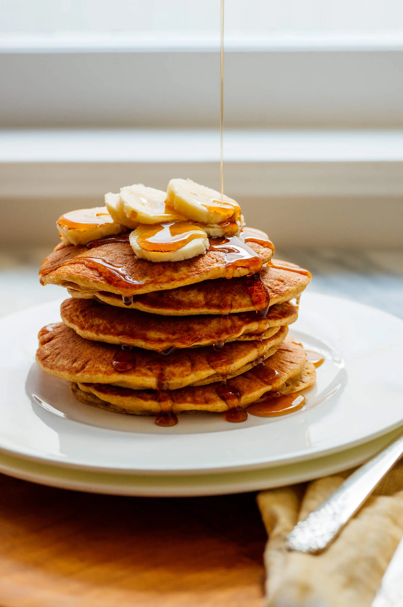

Oat Pancake Recipe

Description
This is a homemade easy to do oat pancake with only 6 ingtedients.
You are going to need a bleender and a frying pan.
Ingredients
- 60g Instant Oat
- 50g Greek Yogurt
- 1 Egg
- 60ml Milk
- 1 Scoop of whey protein (banana flavour)
- 1 tspn Baking powder
Steps
- Add all the ingredients into the blender
- Give a good mix then pour onto the frying pan
- After 2 mins (more or less) turn it over
- Wait 2 more minutes and its ready to eat